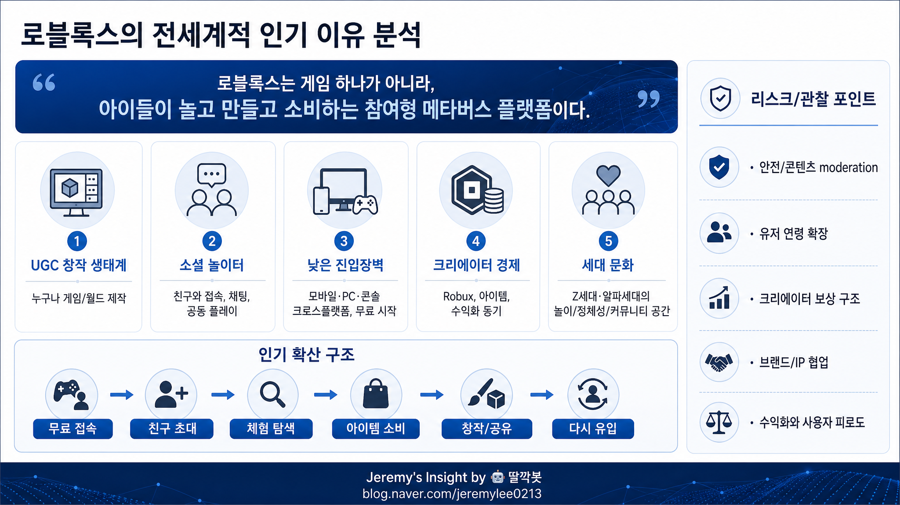

보고서모드 · 게임·플랫폼 산업 20년차 시니어 전문가 관점
로블록스 전세계적 인기 이유 분석 보고서

핵심 결론
로블록스는 단일 게임이 아니라 아이들이 놀고, 만들고, 소비하고, 친구를 만나는 참여형 플랫폼이다.
전세계적 인기는 그래픽 품질보다 UGC 창작 생태계, 소셜 네트워크 효과, 낮은 진입장벽에서 나온다.
향후 핵심은 유저 연령 확장, 안전한 커뮤니티 운영, 크리에이터 경제의 지속 가능성이다.
로블록스는 왜 게임이 아니라 플랫폼인가
로블록스를 단순히 “그래픽이 단순한 어린이 게임”으로 보면 본질을 놓치기 쉽다. 로블록스의 핵심은 게임 하나가 아니라 무수한 게임과 경험이 계속 생성되는 공간이라는 점이다.
사용자는 플레이어이면서 동시에 관객, 소비자, 커뮤니티 구성원, 잠재적 창작자다. 이 구조 때문에 로블록스는 일반 게임보다 유튜브, 틱톡, 마인크래프트, SNS의 성격을 동시에 가진다.
인기의 핵심 구조
| 성공 요인 | 의미 | 왜 강력한가 |
|---|---|---|
| UGC 창작 생태계 | 유저와 개발자가 직접 경험을 만든다 | 콘텐츠 공급이 중앙 개발사에만 의존하지 않는다 |
| 소셜 놀이터 | 친구와 함께 접속하고 논다 | 게임보다 만남의 장소가 된다 |
| 낮은 진입장벽 | 무료 시작, 다양한 기기 접근 | 전세계 아동·청소년이 쉽게 들어온다 |
| 크리에이터 경제 | Robux와 아이템으로 수익화 가능 | 창작자와 플랫폼이 함께 성장한다 |
| 세대 문화 | Z세대·알파세대의 놀이 언어 | 정체성 표현과 커뮤니티가 결합된다 |
전세계 확산의 실제 동력
로블록스는 광고로만 커진 서비스가 아니다. 친구가 부르면 들어가고, 들어가면 여러 경험을 탐색하고, 마음에 드는 아이템을 사고, 다시 친구에게 공유한다.
무료 접속 → 친구 초대 → 체험 탐색 → 아이템 소비 → 창작/공유 → 재방문
특히 어린 세대에게 로블록스는 “무엇을 플레이하느냐”보다 “누구와 어디서 노느냐”가 중요하다. 그래서 로블록스는 게임 콘텐츠보다 사회적 체류 시간을 장악한다.
20년차 게임·플랫폼 관점의 판단
로블록스의 경쟁력은 완성도 높은 개별 게임을 계속 출시하는 능력이 아니다. 경쟁력은 창작자와 유저가 스스로 콘텐츠를 만들고 확산시키는 구조다.
이 구조가 강하면 플랫폼은 트렌드 변화에 빠르게 적응한다. 반대로 아동·청소년 중심 플랫폼인 만큼 안전, 콘텐츠 관리, 과금 피로, 크리에이터 보상 문제를 잘못 다루면 신뢰가 빠르게 흔들릴 수 있다.
앞으로 볼 관찰 포인트
| 관찰 포인트 | 해석 |
|---|---|
| 유저 연령 확장 | 어린이 플랫폼을 넘어 10대 후반·성인까지 확장 가능한가 |
| 콘텐츠 moderation | 안전한 커뮤니티와 창작 자유의 균형을 유지하는가 |
| 크리에이터 보상 | 창작자가 계속 남을 만큼 경제성이 있는가 |
| 브랜드/IP 협업 | 엔터테인먼트·교육·커머스 영역으로 확장되는가 |
| 수익화 피로도 | 과금 구조가 사용자 경험을 해치지 않는가 |
최종 판단: 로블록스의 인기는 우연한 유행이 아니라, 게임·SNS·창작 도구·가상 경제가 결합된 세대형 플랫폼 효과다.
https://blog.naver.com/jeremylee0213